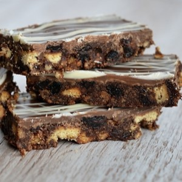

Rocky road sounds childish... here's an opportunity for a grown-up chocolate coma.
Prep Time: 15 minutes
Chill Time: 2 hours
Ingredients
- 100 g Butter
- 25 g Caster Sugar
- 4 tbsp Golden Syrup
- 225 g Digestives Biscuits (approx. 15)
- 100 g Raisins
- 230 g Milk Chocolate
- White Chocolate to Decorate
Recipe Source:
Baking With Granny
Method
- Line your tray-bake tin with greaseproof paper. A 23x23cm baking tray (or equivalent) is ideal. Set aside.
- Crush your digestive biscuits. You want most of it to be quite fine but leave some bits in bigger chunks to give your Tiffin a bit of texture.
- Add the butter, sugar, cocoa powder, golden syrup and 30g of milk chocolate to a large bowl and melt over a bain-marie or in short burst in the microwave, stirring often.
- Stir in the biscuits and raisins and mix well. Press the mixture into your pre-lined tin.
- Melt the remaining milk chocolate in a bain-marie or in short bursts in the microwave, stirring often. Pour over the biscuit mixture and smooth over evenly. Decorate with melted white chocolate if desired.
- Leave to set in the fridge for at least 2 hours but ideally over night before cutting into individual portions.